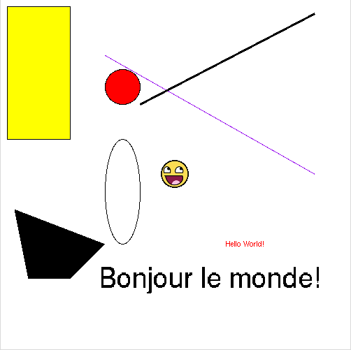

Nous allons maintenant utiliser tkinter pour dessiner. La zone de dessin proposée par tkinter s'appelle un canvas.
#!/usr/bin/env python
# -*- coding: utf-8 -*-
from Tkinter import *
fen = Tk()
can=Canvas(fen,width=500,height=500,background='white')
canv.pack()
fen.mainloop()
Nous définissons un objet de type "Canvas" : can. Le constructeur de la classe "Canvas" prend en paramètres : "fen" qui est l'objet tkinter, "width" la largeur du canvas, "height" la hauteur du canvas et "background" la couleur de fond du canvas (par défaut, la couleur de fond est grise). Comme vous avez dû le remarquer, nous avons avons ici ce que l'on appelle des "paramètres nommés". Quand certains paramètres d'une fonction sont optionnels (c'est le cas ici), il est nécessaire de nommer les paramètres comme ci-dessus (exemple "width=500").
À faire vous-même 5.1
Saisissez, testez et analysez ce code (placez cette image dans le même répertoire que le fichier qui contiendra votre programme).
{kind=link}
#!/usr/bin/env python
# -*- coding: utf-8 -*-
from Tkinter import *
fen = Tk()
can=Canvas(fen,width=500,height=500,background='white')
can.pack()
rect=can.create_rectangle(10,10,100,200,fill="yellow")
disque=can.create_oval(150,100,200,150,fill="red")
oval=can.create_oval(150,200,200,350,fill="")
ligne_1=can.create_line(150,80,450,250,fill="purple")
ligne_2=can.create_line(450,20,200,150,width=3)
poly=can.create_polygon(20,300,40,400,100,400,150,350)
mon_image=PhotoImage(file="smiley.gif")
img=can.create_image(250,250,image=mon_image)
text_1=can.create_text(350,350,text="Hello World!",fill="red")
text_2=can.create_text(300,400,text="Bonjour le monde!",font=("Helvetica",30))
fen.mainloop()
Vous devriez obtenir ceci :
En vous aidant du code ci-dessus et de l'image ci-dessus, essayez de découvrir par vous-même les différentes fonctions permettant de dessiner, d'afficher une image ou encore d'afficher du texte dans un canvas (exemples de paramètres à étudier : "fill", "file", "text", "width"...). Où se trouve l'origine du repère dans un canvas ? Consultez la documentation de tkinter en cas de difficultés. N'hésitez pas à apporter des modifications à ce code afin de vous assurer que vous avez bien compris.
Nous allons maintenant apprendre à créer une animation (animer un dessin dans un canvas).
À faire vous-même 5.2
Saisissez, testez et analysez ce code.
#!/usr/bin/env python
# -*- coding: utf-8 -*-
from Tkinter import *
import time
fen = Tk()
can=Canvas(fen,width=500,height=500,background='white')
can.pack()
balle=can.create_oval(10,250,30,270,fill="red")
while True:
can.move(balle,1,0)
fen.update_idletasks()
fen.update()
time.sleep(0.01)
fen.mainloop()
Voici quelques explications sur le programme ci-dessus :
- Nous dessinons un disque (dans la suite ce disque représentera une balle) à l'aide de la méthode create_oval.
- while True : est une boucle infinie, tout ce qui se trouve dans cette boucle sera exécuté à "l'infini" (enfin, à "l'infini" pas vraiment, car évidemment l'exécution cesse quand l'utilisateur ferme la fenêtre tkinter). Cette boucle "infinie" est un grand classique dans la conception des jeux, d'ailleurs on parle souvent de "boucle de jeu". Il faut bien comprendre qu'une animation est une succession d'images fixes (comme un dessin animé). Chaque "tour de boucle" correspond à l'affichage d'une image fixe, c'est parce que cette boucle est exécutée plusieurs fois par seconde que nous avons l'impression de mouvement.
- l'objet "Canvas" propose la méthode move qui permet de déplacer un objet à l'écran. Cette méthode prend en paramètre : l'objet à déplacer (dans notre cas il s'agit de la balle), le déplacement selon l'axe x, le déplacement selon l'axe y. Dans notre cas, à chaque image, la balle se déplace de 1 pixel sur l'axe horizontal et ne se déplace pas selon l'axe vertical.
- fen.update_idletasks() et fen.update() permettent de mettre à jour l'affichage de la fenêtre
- Cette boucle de jeu pourrait s'exécuter plusieurs centaines de fois par seconde. Dans ce cas, le mouvement de notre balle serait tellement rapide que vous ne verriez rien à l'écran. Pour éviter cela, nous demandons, à chaque tour de boucle, à l' ordinateur de temporiser un peu (d'attendre sans rien faire) à l'aide de l'instruction time.sleep(0.01) (permet de "faire une pause" de 0,01 seconde). Vous pouvez éventuellement supprimer cette ligne et relancer le programme pour voir ce qui se passe (vous pouvez aussi modifier la valeur).
À faire vous-même 5.3
En vous inspirant de ce qui a été fait dans le "À faire vous-même 5.2", écrivez un programme permettant à la balle de rebondir sur les bords de la fenêtre.
À faire vous-même 5.4
En vous inspirant de ce qui a été fait dans le "À faire vous-même 5.3", écrivez un programme permettant à la balle de se déplacer en diagonale et de rebondir sur les bords de la fenêtre de façon réaliste. La direction et la vitesse d'origine de la balle devront être aléatoires.
Pour "tirer" un nombre entier aléatoire compris entre a et b, il suffit d'écrire random.randint(a,b) sans avoir oublié d'importer le module random en plaçant un import random au début de votre programme.